Zeus
Es el el dios de los truenos y el señor del cielo.
Reinaba desde su trono en el monte sagrado del Olimpo a los demás dioses,
a los semidioses y a los humanos. Se le solía simbolizar con un rayo,
un cetro o con un águila. Representaba para muchos el dios de la justicia y
la clemencia quien castigaba con su rayo a quienes presidían malas andanzas.
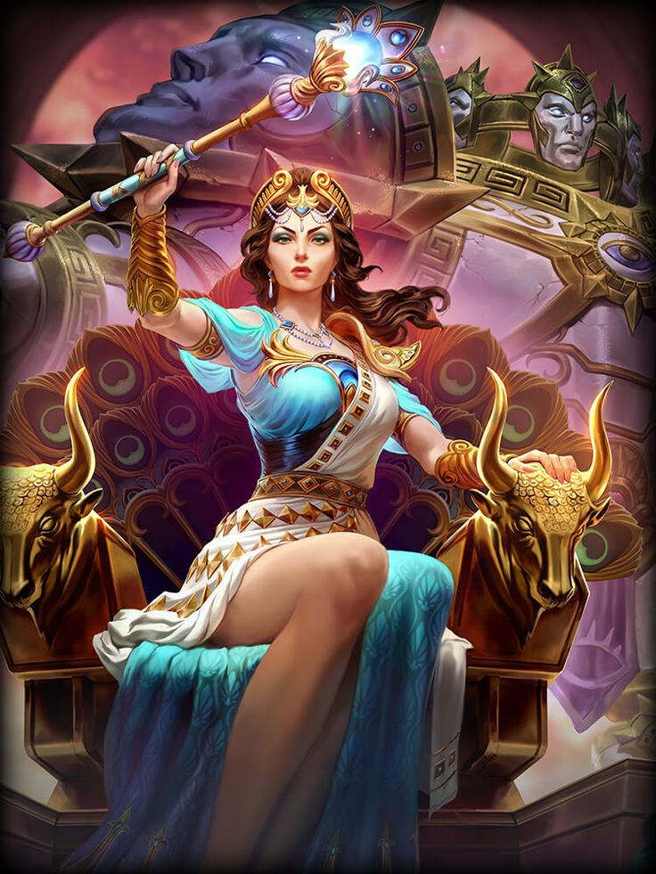
Hera
Diosa del hogar y matrimonio. La situación con su esposo Zeus le generaba una mala vida.
Algunos consideran a Hera como una diosa vengativa que intentó calmar su ira hacia su esposo con otras personas.
Hera pasó a ser la diosa del hogar a quien se le pedía por la unión en el matrimonio.
Se le conoce también por su habilidad de engendrar sola a criaturas.
De este modo, dio vida a uno de los dioses del Olimpo: Hefesto, el Herrero.
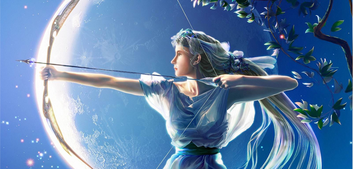
Artemisa
La diosa de la caza. Su símbolo era un arco de plata con flechas,
la luna y un ciervo con cornamenta dorada que le acompañaba.
Representaba la habilidad para los animales silvestres y la fertilidad de los terrenos.
Artemisa solía ser invocada por la mujeres para que les brindase auspicia de amparo y
protección. También solía ser aclamada por los cazadores para encontrar buenas presas
y en los cultivos para que las siembras tuvieran una buena raíz.
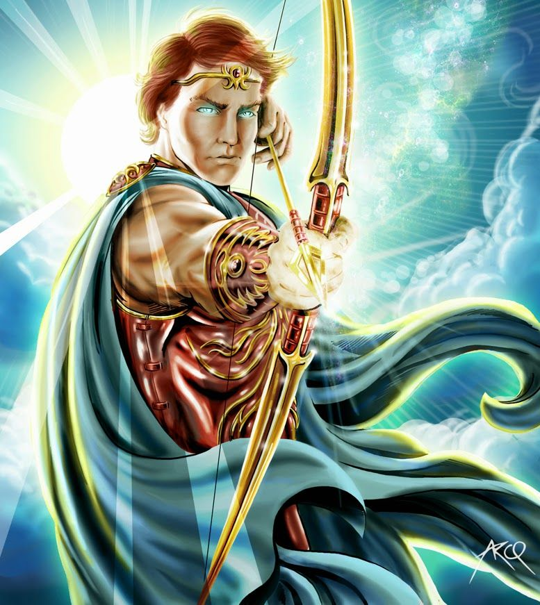
Apolo
Dios de la música y la poesía. Era hermano gemelo de Artemisa. Su simbología era una lira y un sol.
Era joven y vigoroso que destacaba entre los demás dioses por sus habilidades para la profecía y la adivinación.
La música y la poesía eran su pasión. Por ello, Hermes le regaló el instrumento musical que llevaba consigo,
para que pudiese expresar sus sonetos y memorias. Apolo representaba la armonía y el orden de la composición.
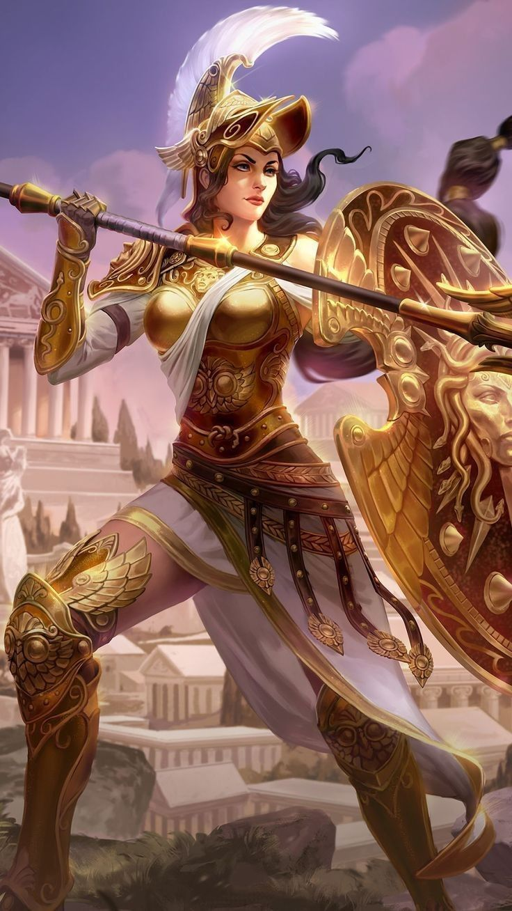
Atenea
Diosa de la sabiduría y la justicia. Era la guardiana de la capital de Grecia, Atenas. De ahí viene su nombre.
Los maestros en combate y gobernantes solían invocarle para que les aconsejara estratégicamente en las batallas
y poder dar una victoria campante. Para los griegos era
considerada también como mentora de los héroes: les proporcionaba en ocasiones
una fuerza corporal sacada de su energía o el aliento necesario para continuar en una batalla.
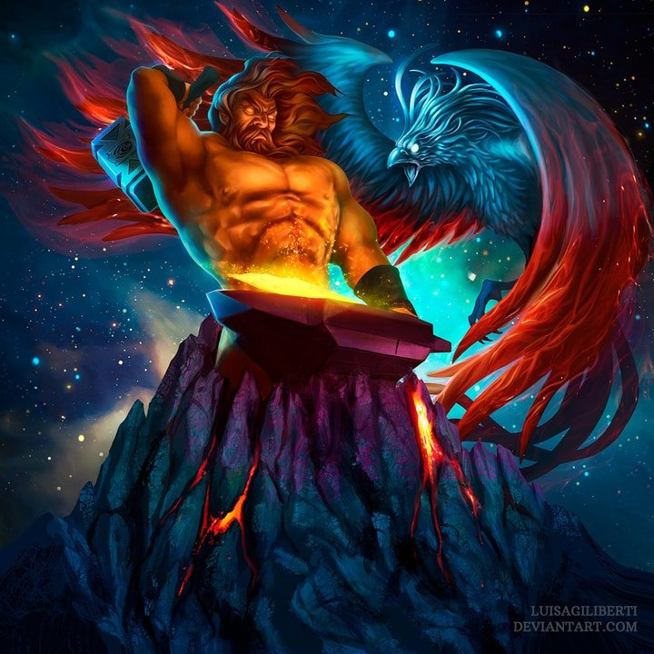
Hefesto
Dios de la herrería. Era conocido por ser el herrero y artesano que construía las armas de los dioses.
El material que utilizaba se fundía en el monte Etna, un volcán de Sicilia. En la mitología Griega era
representado con el fuego y con la forja del herrero. Según algunas versiones de la mitología griega,
Hera, su madre, concibió a Hefesto sola. La criatura nació con un aspecto desgarbado y era cojo.
Fue expulsado del Olimpo.
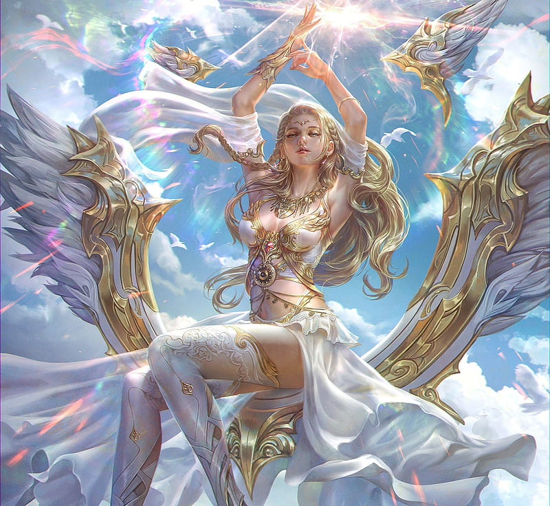
Afrodita
Diosa del amor, la belleza y el deseo. Por lo general era simbolizada con una rosa, perlas o con una paloma blanca.
Era reconocida en el panteón griego como la diosa más hermosa. Afrodita fue un referente para la pasión y las personas
solían brindarle culto cuando asuntos de amor y desamor se trataba.
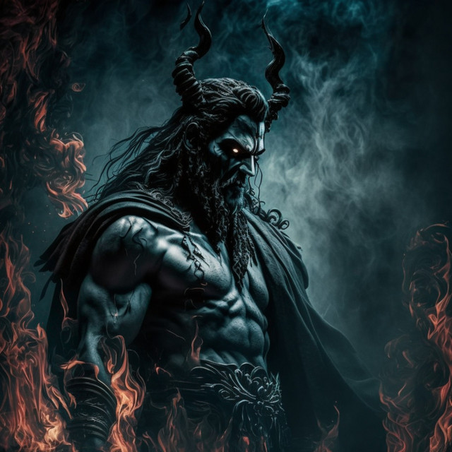
Hades
Dios de la muerte y señor del inframundo. Hades vivía fuera del Olimpo, en el Averno oscuro donde custodiaba a las almas
en pena y a los condenados. Los símbolos de Hades eran un cetro de ébano y un perro de tres cabezas que vigilaba la morada
de los muertos. Hades solía ir a buscar los muertos y transportarlos en una balsa hasta el inframundo.Hades era el encargado
de mantener un equilibrio entre los vivos y los muertos. Se le asociaba con la invisibilidad como una de sus habilidades.
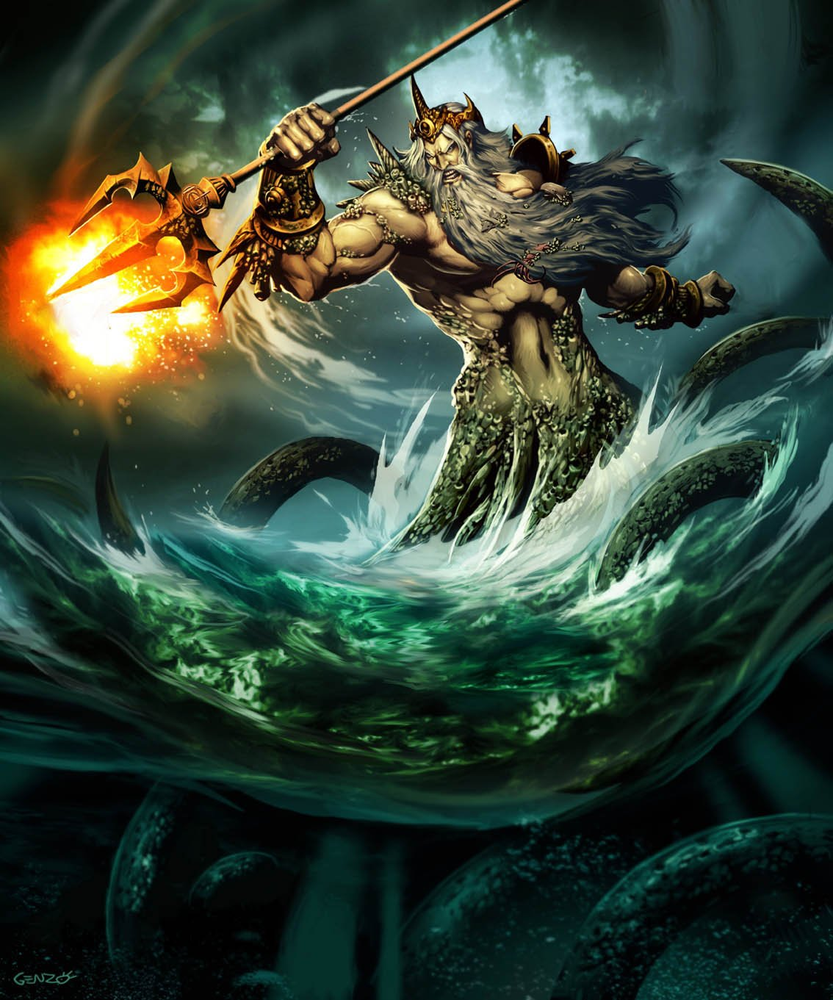
Poseidon
Dios del mar y los maremotos. Controlaba las aguas profundas y era capaz de desestabilizar la tierra cuando agitaba su
tridente. Era otro dios que tampoco vivía en el Olimpo. Él habitaba en la profundidad de los océanos y, desde allí,
gobernaba en su trono marino. Se solía simbolizar con una corona del rey de los mares y con un tridente que usaba como
extensión de su poder. En la mitología griega, Poseidón tenía habilidades para comunicarse con los seres vivos que
habitaban el mar.
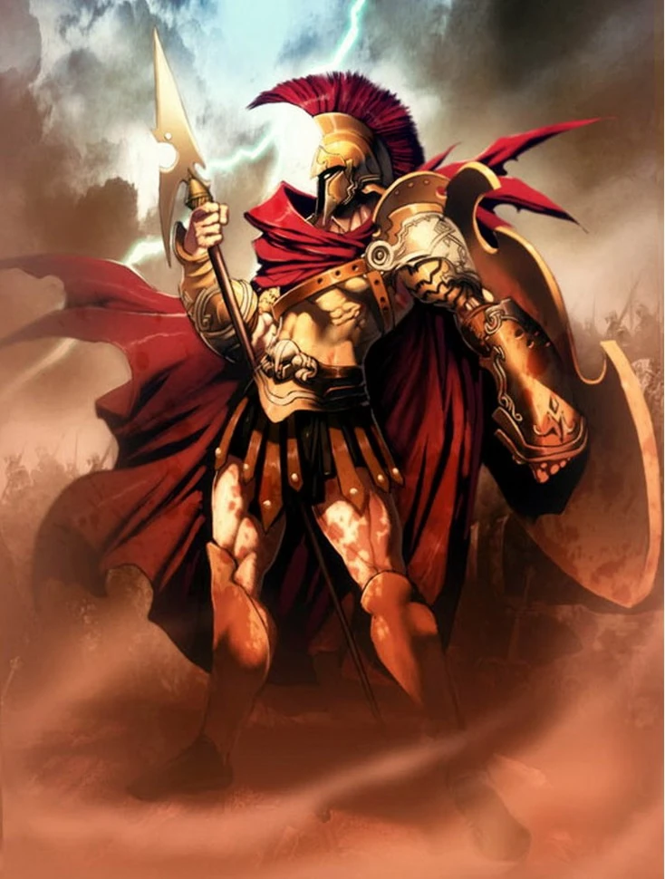
Ares
Dios de la guerra y las artes bélicas. Se simbolizaba con un escudo, un casco con cresta roja y una lanza con la que siempre
atinaba con facilidad divina a sus oponentes o enemigos. Solía usar una armadura de bronce y era conocido por su temperamento
conflictivo y competitivo. Los griegos adjudicaban las batallas brutales y sangrientas a obras de Ares. Los hijos que tuvo con
Afrodita, Demios y Fobos, representan los espíritus del terror y del miedo que se vivía en una batalla.
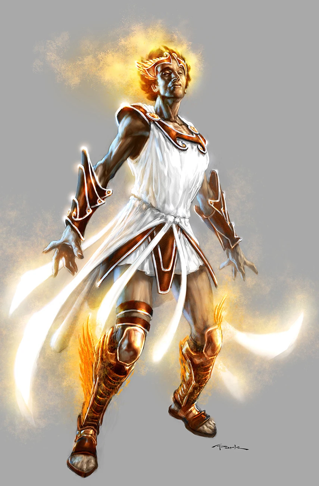
Hermes
Dios del comercio y la prosperidad. Sus símbolos eran unas sandalias, un casco y unas alas blancas. Nació en la cueva del
monte Cileno. Se invocaba a Hermes para pedir astucia ante ladrones y estafadores o se le rendían rituales para que
trajera riquezas a las casas. El dios Hermes poseía grandes habilidades para el discurso y la oratoria. Reunía a los
dioses a su alrededor y contaba las nuevas noticias; además, traía y llevaba mensajes importantes de los dioses griegos.
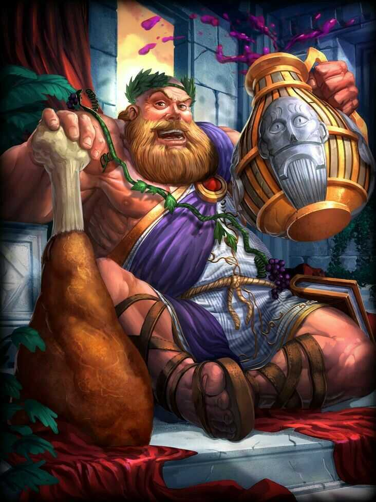
Dionisio
Dios del vino y la fiesta. En su nombre se realizaban exuberantes fiestas en las que se bebía vino en abundancia.
A Dionisio le gustaba el éxtasis, el placer, el descanso y las obras de teatro; las cuales apreciaba mientras tomaba
vino en compañía de sus amistades. Se le representaba como un hombre joven, alegre y despreocupado. Sus símbolos eran
un ramo de uvas frescas y una copa de vino que sostenía en la mano.